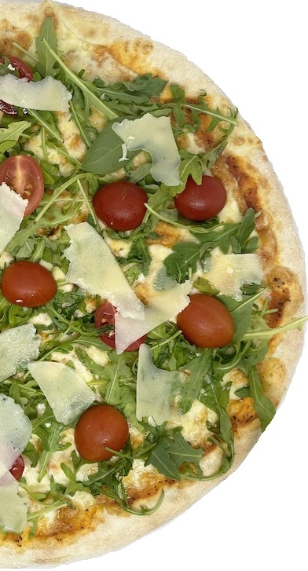

|  |
Ingrediente: Sos de roșii, mozzarella, gorgonzola, salam crud uscat, piept de pui, roşii, ulei măsline. Jumătate specialități italiene de brânză, jumătate specialități din carne, Pizza Fresca este un mozaic echilibrat de arome. Mozzarella suculentă și salamul uscat, gorgonzola cu gust deosebit și pieptul de pui cu gust familiar, aparent contrare, devin împreună un ”întreg”. Mai adăugăm și feliile rumenii de roșii coapte și gustul de pizza autentică este garantat. Pizza Fresca pare să fi devenit populară în Statele Unite ale Americii în ultimele decenii, iar rețetele variază în funcție de preferințele și disponibilitatea locală a ingredientelor. Este de obicei făcută cu un blat de pizza subțire, sos de roșii, mozzarella proaspătă, roșii feliate, busuioc și ulei de măsline. Cu toate acestea, faptul că nu există o istorie clară legată de pizza Fresca nu a afectat popularitatea sa în rândul iubitorilor de pizza și al celor care apreciază o alimentație sănătoasă și echilibrată, bazată pe ingrediente proaspete și de calitate. |